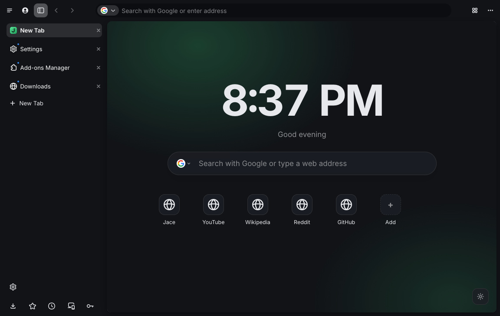
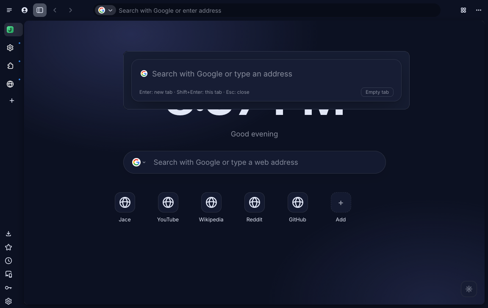
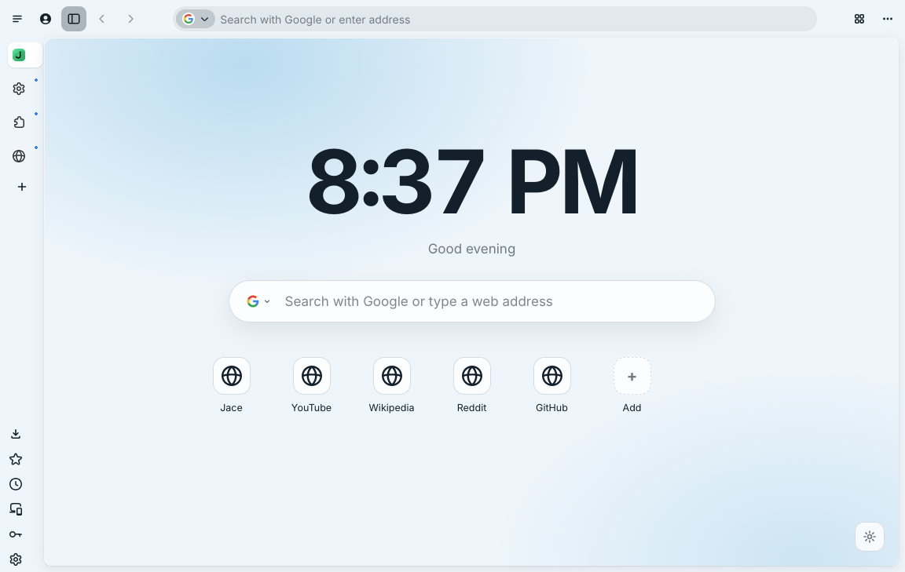
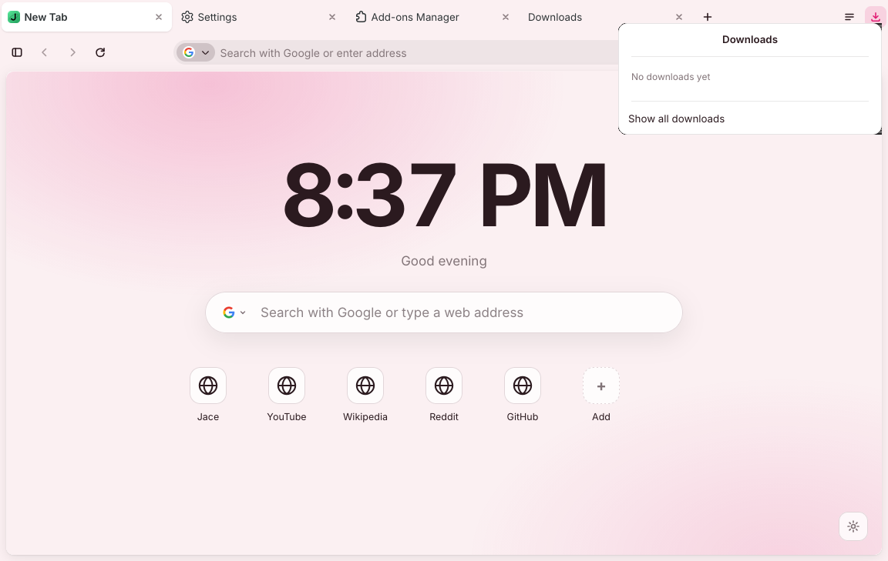
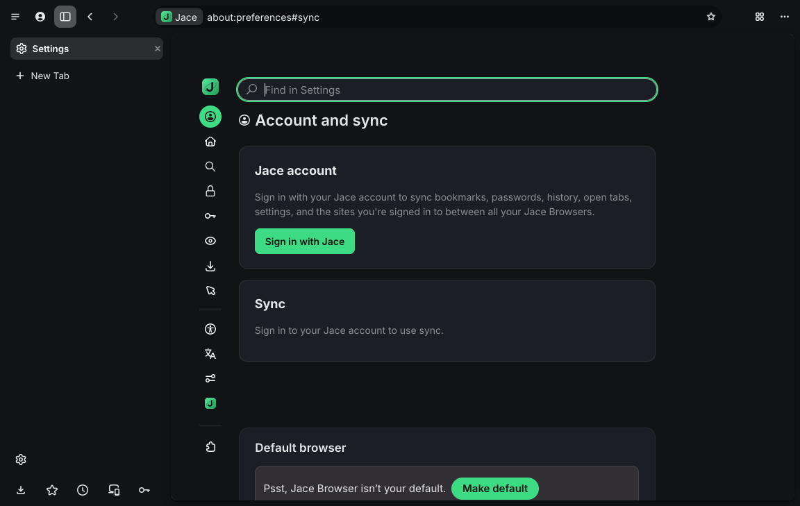
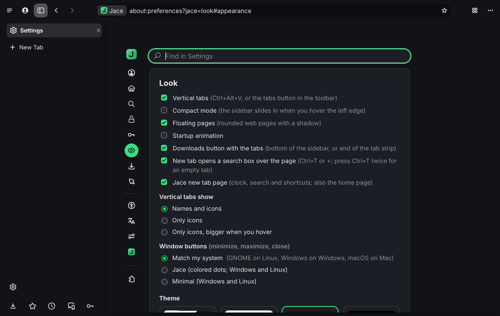
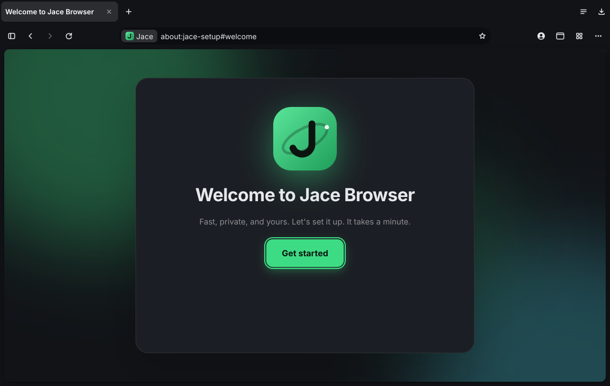

The web, your way.
Clean, fast, and yours.
Jace Browser is a free browser built on Firefox. Vertical tabs, your Jace account with end-to-end encrypted sync, themes, and none of the tracking or clutter.
Windows, macOS and Linux · free and open source

Everything you need, nothing you don't
All of Firefox's speed, privacy and add-ons, with Jace's look and your Jace account built in.
Vertical tabs
Tabs down the side with names, only icons, or icons that grow when you hover. Or tabs across the top: switch any time with Ctrl+Alt+V.
Jace sync, encrypted
Bookmarks, history, passwords, open tabs, settings and add-ons, encrypted on your device with your passphrase before they leave it.
Signed in everywhere
Sync your site sign-ins too, so signing in on one device signs you in on the others. Jace's own sites sign you in automatically.
New tab, over the page
Ctrl+T opens a search box over the page you're on: search, type an address, or jump to a tab that's already open.
Themes
Light, dark and colorful themes, your own colors, or any theme from Firefox's add-ons site.
No tracking
Mozilla's telemetry, studies, ads and sponsored suggestions are off and locked. So are Firefox's AI features and VPN promos.
WebUSB
Websites can talk to USB devices you pick, like microcontroller boards and other gadgets with web tools. Firefox doesn't do this on its own.
Streaming
Widevine DRM on Windows and macOS, for streaming sites that need it.
Take a look
The same look on every page, from the new tab to settings.






Already have a browser?
The Jace extension brings your Jace account to Firefox and Chrome, and syncs with Jace Browser.
- Sign in with your Jace account
- Encrypted sync of bookmarks, history, open tabs and site sign-ins
- Your add-on list, so your other devices can install the same ones
- Signed in to Jace's websites automatically
FirefoxChromeEdgeBrave
Chrome: unzip it, open chrome://extensions, turn on Developer mode and click Load unpacked.
Install it in a minute
Download it, open it, and the setup does the rest: tabs, look, search engine, your Jace account.
Windows 10 / 11
Run the setup .exe. If SmartScreen appears, click More info → Run anyway: it isn't code-signed yet. There's also a portable .zip.
macOS
Open the .dmg and open Jace Browser from it. The first time, right-click it and choose Open. The setup then moves it to Applications for you.
Linux
Make the .AppImage executable (chmod +x) and run it. The setup adds it to your apps menu and app center.